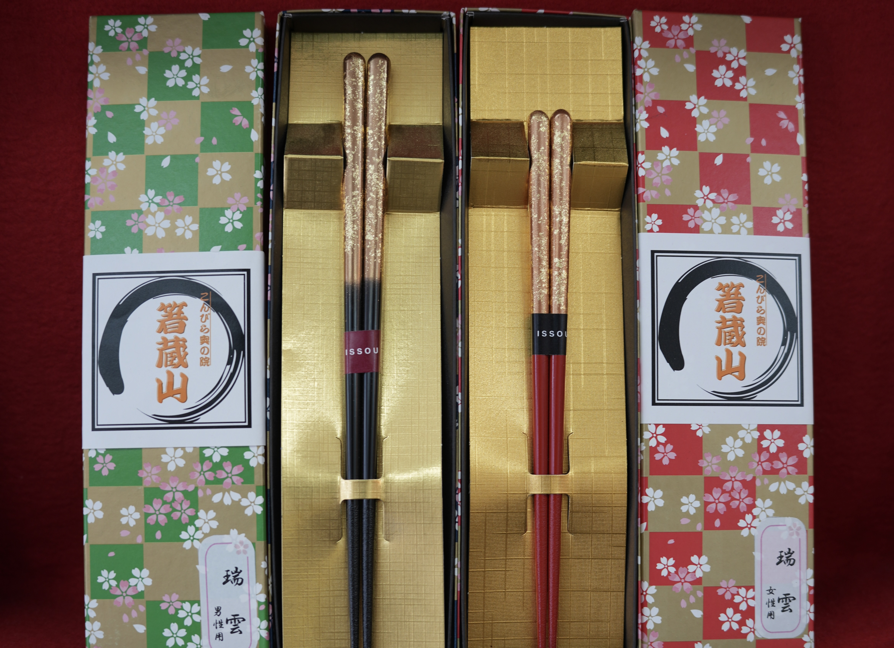
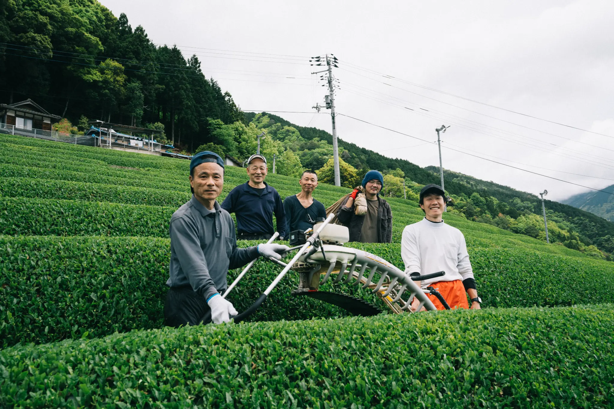

Experience & Craft
Bonsai
Love the changing form. Within a small pot unfolds an art that embraces the passage of time.
View →
Craft
Chopsticks
These chopsticks bridge your daily dining to over 1,200 years of Hashikura-ji history.
View →
Pantry
Shiki no Miso
In pursuit of authentic methods. A miso that lets you feel Japan's four seasons, entirely free from pesticides.
View →
Drink
Kyokufu-en Green Tea
An astonishing terroir. Authentic tea leaves grown on steep slopes.
View →
Drink
Oboke Wakocha
Craftsmanship has been quietly preserved in Japan's remote regions.
View →
Drink
Shikoku Natural-Flavor Wakocha
A luxurious, completely fragrance-free union of Shikoku's fruit and secluded-region Wakocha.
View →
Drink
Miyoshikiku
Walk the wild side. A new sip that breaks sake conventions.
View →
Pantry
Iya Gibier
A one-of-a-kind bounty nurtured by a remote mountain forest.
View →Craft
Awa Akane
Dyeing the color of sunset, across a thousand years.
View →
Drink
Sudachi Wakocha
"This citrus is less a fruit and more a perfume."
View →